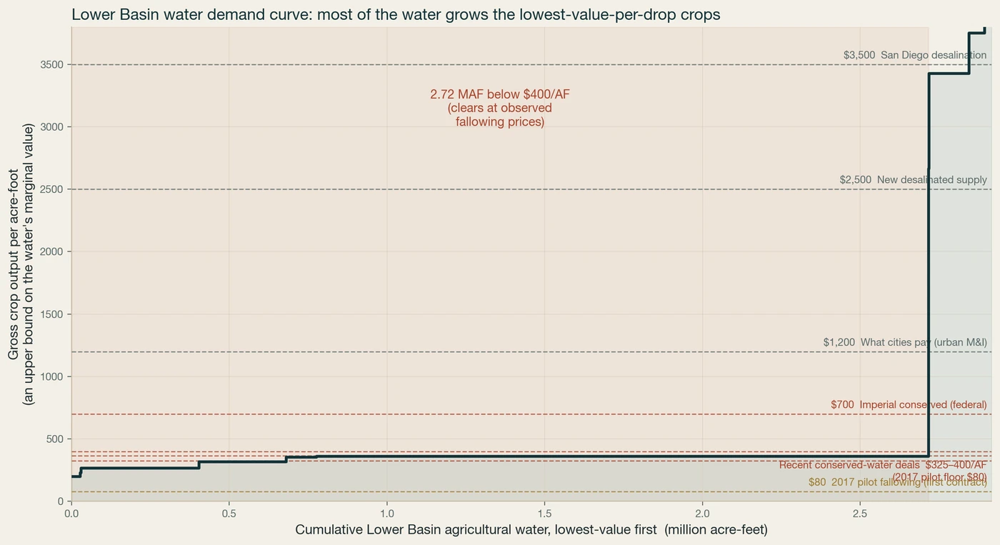

Efficiency isn't conservation. We measured it.
Your caveat on the panel was the most important thing said all afternoon: more efficient irrigation does not, by itself, return water to the river. It turns out to be measurable, and the measurement has direct consequences for how a rebooted river should account for saved water.
1. The efficiency paradox, in the data
We pulled field-level satellite evapotranspiration (OpenET) for the four largest Lower Basin agricultural counties, 2020–2024. Consumptive use — the water actually removed from the system — is flat to slightly rising, despite two decades of drip, canal lining and on-farm efficiency investment in these same districts.
 Click to enlarge
Click to enlarge
The policy implication is exact: efficiency programs cannot be credited as conservation unless the saved water is measured as reduced consumptive use and physically left in the system. Crediting diversion reductions, or assuming efficiency equals savings, books water that was never freed.
2. Phantom water vs wet water, made operational
You and Nicole both drew the line between paying for a paper right that might be dry in a year and paying to keep wet water in the lake, verified by elevation. Field-level ET is the other half of that verification: it confirms the water was not consumed upstream in the first place.
- Only consumptive-use (ET) reductions count, measured field by field, never diversions.
- The strike is observable — lake elevation for storage, ET for the saving — so a conserved acre-foot is auditable, not asserted.
- This is the accounting that lets a conservation payment be defended to an auditor, and financed.
3. The consumptive-use ledger
Measured, agriculture is roughly three-quarters of human consumptive use, exactly as you framed it. The four counties below consume about 3.0 MAF/yr of measured ET, and the water goes disproportionately to low-value forage.
 Click to enlarge
Click to enlarge
| Use | Gross output per acre-foot |
|---|---|
| Alfalfa / forage | ~$360 |
| Produce | ~$3,750 |
| Urban | ~$1,200 |
Gross output overstates the water's own value (it nets out land and labor), so read the spread as directional. The point holds: the cheapest large block of conserved water is the low-value forage, and it should be priced on measured consumptive use, not diversions.
4. The demand curve for water
Order every acre-foot of that measured use by what it earns, and the value gap becomes a demand curve. Built from the same satellite ET, allocated across the crop map and priced by gross crop output per acre-foot, it shows where conservation clears first, and against what real deals have paid.
{kind=link}

Click to enlargeAbout 2.7 of 2.9 million acre-feet, roughly 93%, of measured Lower Basin agricultural water grows crops worth under about $400 per acre-foot in gross output — at or below what conservation deals have paid (the 2024–25 federal fallowing vintage at $400/AF; the 2026 system-conservation price is $325/AF, which still clears on net margin). Only about 199,000 acre-feet, the produce, sits above. That long flat stretch is the conservation supply: the cheapest large block of water in the basin, and the block a compensated fallowing market reaches first. It is a crop-resolved first cut of the water demand curve the panel asked for — built from measured county ET allocated across the USDA crop map — and the seed of the publicly-owned, decision-grade pricing tool a rebooted river needs.
Gross output overstates the water's own value; a farmer's willingness to accept fallowing tracks net margin, which sits well below gross for forage — which is exactly why $325–400/AF deals clear alfalfa. The four counties consume ~3.0 MAF of total measured ET; the ~2.9 MAF here is the cultivated share. OpenET ensemble ET carries roughly 10–20% uncertainty (Volk et al. 2024); the ranking is robust to it. Per-crop water here allocates measured county ET across the USDA CDL crop map by published water duty. On that allocation alfalfa alone accounts for ~1.94 MAF of consumptive use across the four counties, and forage as a whole ~2.05 MAF. The OpenET record behind it is county-level, not per-crop, so the crop split is an allocation rather than a pixel-level measurement of each crop. Scope is the four measured Lower Basin counties, ~2.9 MAF.
5. Tribal inclusion, formalized
You called for replicating the structure that already works. The 2024 Upper Colorado River Commission memorandum of understanding with the six Upper Basin tribes created a formal seat in negotiation and information-sharing. Basin 2.0 should extend that model basin-wide, so inclusion survives whoever holds the decision-making seats, and pair it with off-reservation leasing that lets tribal water earn without being permanently alienated.
What a rebooted river should take from this
- Price conservation on measured consumptive use, not diversions or efficiency proxies.
- Verify with the two observables already available: ET for the saving, lake elevation for the storage.
- Fund transitions, not paper rights — the bridge the 75-organization $2B letter to Congress is asking for.
- Formalize tribal inclusion on the UCRC model.
None of this is a technology problem. The measurement exists. What is missing is the decision to account in wet water. That is a policy choice, and it is the one that makes every conservation dollar defensible.
Independent analysis by Steps Ventures, not affiliated with any agency, utility, or investor. Consumptive use from OpenET (NASA/DRI/EDF/Google, Volk et al. 2024) on Google Earth Engine (Gorelick et al. 2017); figures and full method on the measured layer. Prepared July 2026.